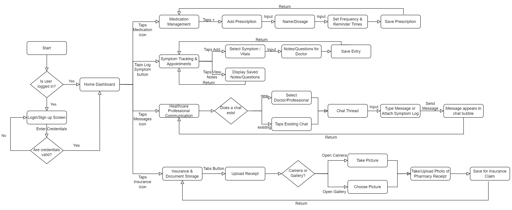

CareConnect
SOEN 357 Mini Project - User Interface Design
Table of Contents
1. Project Introduction
Managing healthcare responsibilities can quickly become overwhelming, especially when balancing a busy student life or chronic health conditions. CareConnect is a proposed health companion app designed to centralize these tasks in one place. The primary goal of this project is to create an intuitive user interface that minimizes cognitive load.
This project addresses three main challenges: managing complex medication schedules, remembering specific symptoms for short medical appointments, and digitizing pharmacy receipts for insurance claims (such as university Studentcare plans). This report outlines my user-centered design (UCD) process, from initial research and persona development to low-fidelity wireframes and the final Figma prototype.
2. Interactive High-Fidelity Prototype
Interact directly with the CareConnect Figma prototype below. Click anywhere on the screen to see clickable areas.
3. Product Research & Methodology
To ensure that I was addressing real usability concerns, I conducted secondary research by analyzing existing applications and reviewing user feedback.
- Competitive Analysis: I reviewed leading medication apps such as Medisafe. Although these apps offer many features, users frequently report cluttered interfaces and steep learning curves. Inflexible reminder schedules were also a common frustration, particularly for users whose routines change on weekends.
- Public Forums: I explored student forums and online patient communities. A recurring issue among students was difficulty keeping track of physical pharmacy receipts for insurance reimbursement. Patients commonly mentioned forgetting minor symptoms or questions during doctor appointments.
4. Data Analysis: User Personas & User Stories
Based on my research findings, I developed two primary personas representing my target users. These personas helped me prioritize features and maintain a strong focus on real user needs.
Persona 1: The Busy Student
- Name: Julian (21)
- Background: Third-year software engineering student managing ADHD and mild asthma.
- Goals & Motivations: Julian needs to stay consistent with his medication to manage his academic workload, especially during midterms and project deadlines.
- Pain Points: He often loses physical pharmacy receipts, which means he misses out on insurance reimbursements. He also requires reminders that are helpful but not disruptive while studying.
- User Stories:
- As a busy student, I want to receive simple medication reminders so that I do not miss a dose during study sessions.
- As a student on a budget, I want to use my camera to scan and save pharmacy receipts so that I can easily submit my insurance claims later.
Persona 2: The Multi-Tasking Patient
- Name: Elena (58)
- Background: High school teacher managing Type 2 Diabetes and hypertension.
- Goals & Motivations: She needs to track multiple prescriptions (some with food, some without) to maintain her health.
- Pain Points: Elena finds complex applications overwhelming. She also feels anxious before doctor appointments and sometimes forgets to mention symptoms she experienced weeks ago.
- User Stories:
- As a patient with multiple conditions, I want a clean dashboard to track my medication schedule so I can easily see what I need to take.
- As a patient, I want a dedicated section to log my symptoms and notes so that I can communicate clearly with my doctor.
5. User Journey Mapping
I created user journey maps to visualize how each persona interacts with the application and to identify opportunities for improving the interface at each stage.
User Journey Map: Julian

Figure 1: Julian's journey from onboarding to setting up reminders and dealing with insurance receipts. For him, the focus is on speed and efficiency.
- Phase 1: Discovery & Onboarding: Opportunity: Keep the sign-up process fast and avoid unnecessary details.
- Phase 2: Setup: Opportunity: Allow customizable presets to input medication schedules easily.
- Phase 3: Reminder: Opportunity: Enable users to mark a dose as “taken” directly from a push notification.
- Phase 4: Ongoing Management: Opportunity: Include a quick camera shortcut so receipts can be scanned immediately.
User Journey Map: Elena

Figure 2: Elena's journey focuses on symptom logging and preparing for a medical appointment. The goal is to reduce her anxiety and cognitive load.
- Phase 1: Recognizing and Logging a Symptom: Opportunity: Make the “Log Symptom” feature highly visible and easy to access.
- Phase 2: Note-Taking and Preparation: Opportunity: Use clear typography and strong contrast for better accessibility.
- Phase 3: Doctor’s Appointment: Opportunity: Provide a clear summary view of logged symptoms that she can quickly read during a short consultation.
- Phase 4: Post-Appointment Updates: Opportunity: Make it easy to edit existing medications rather than forcing her to delete and recreate them.
6. Design Process & Ideation
I developed the visual design iteratively, beginning with conceptual scenarios, progressing through structural planning, and concluding with detailed UI wireframes.
Storyboard

Figure 3: The storyboard illustrates Julian at the pharmacy and highlights the inconvenience of handling physical receipts. This scenario helped ground my design decisions in a realistic context.
User Flow Chart
Figure 4: The system architecture. This flowchart maps how users navigate from the main dashboard to core features like Medication, Symptoms, and Insurance. It also highlights the pathway for communicating symptom logs with healthcare professionals.
Low-Fidelity Sketches


Figure 5: I began with paper sketches to quickly explore layout options. I selected a bottom navigation bar because it is a familiar mobile design pattern and supports one-handed use.
Digital WireFrames

Figure 6: I transitioned the sketches into Figma and implemented a card-based interface to group related medical information into clear visual sections, reducing screen clutter.
7. Usability Testing & Feedback
Methodology & Goals: To evaluate the interface, I conducted task-based usability testing. The objective was to determine whether CareConnect reduces cognitive load compared to existing applications. Participants were asked to set up custom reminders, log symptoms, and simulate sharing their data with a doctor.
Summary of User Feedback & Design Influence
After testing the initial concepts with peers representing the target demographic, I gathered the following insights which directly influenced my final design decisions:
- Feedback on Scheduling: Users found blank custom time inputs tedious to fill out. Design Iteration: I incorporated quick-select preset buttons (e.g., "Morning with food", "Before bed") to accelerate the medication setup process.
- Feedback on Healthcare Communication: A user mentioned that just showing a doctor their phone screen felt informal. Design Iteration: I refined the symptom tracker flow to explicitly include an export/share feature, allowing patients to formally communicate their medical notes with healthcare professionals.
- Feedback on Navigation: The persistent bottom navigation bar was universally praised for its clarity, confirming my decision to use it over alternative navigation models.
Feedback Collection: I will use the Think-Aloud Protocol, asking users to verbalize their thoughts while navigating the app. I will document any moments of hesitation or confusion. After the test, I will administer a short questionnaire to evaluate overall usability and satisfaction.
8. Final Reflection
Applying UX Principles: Following the UCD process helped me focus on solving real user problems rather than adding unnecessary features. Creating the Julian and Elena personas required me to justify every interface element. For example, the receipt scanner was included to directly address the financial concern of students losing insurance reimbursements. The clean, minimalist layout was intentionally designed for users like Elena who may feel overwhelmed by complex medical applications.
Challenges Overcome:
- Feature Creep vs. Simplicity: Combining medication tracking, symptom logging, and insurance management within one application can easily result in a cluttered interface. To address this, I applied progressive disclosure by hiding advanced options until needed and maintained a consistent bottom navigation bar to support a clear mental model.
- Prototyping Context: Testing reminder notifications within a static prototype is challenging. To overcome this, I used Figma animations to simulate incoming notifications, allowing me to visualize how users would interact with alerts without leaving the main dashboard.